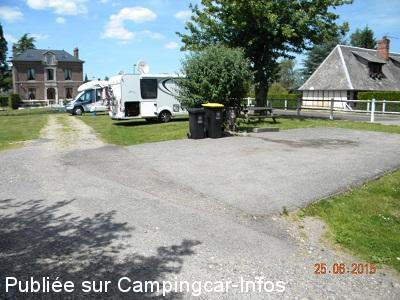
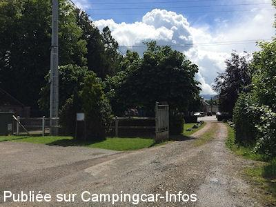

ASN = Aire de services avec stationnement nuit possible de :
CAMPIGNY
(N° 142)
Accès/adresse :
Chemin de la Motte
27500 CAMPIGNY
27500 CAMPIGNY
Latitude : (Nord) 49.311° Décimaux ou 49° 18′ 39′′
Longitude : (Est) 0.55237° Décimaux ou 0° 33′ 8′′
Tarif : Gratuit
Il y a une boite aux lettres pour faire un don pour l'eau
Type de borne : Artisanale
Services :


Autres informations :
Ouverte toute l'année
3 emplacements
Visite et marche autour de Pont Audemer
Le 25/06/2015 par didier84

Le 25/06/2015 par didier84

Le 28/05/2014 par Cerise35
Le 28/05/2014 par Cerise35
Le 28/05/2014 par Cerise35
de
armend 1942
le 26/06/2015 :
Cette aire a le mérite d'exister mais un simple robinet, merci l'hygiene et un simple recouvert d'une plaque en métal pour vidanger eaux grises et noires c'est quand même à minima. D'autre part, il faut choisir pour réception parabole ou ombre, mais pas compatible. Merci quand même à la municipalité.
Cette aire a le mérite d'exister mais un simple robinet, merci l'hygiene et un simple recouvert d'une plaque en métal pour vidanger eaux grises et noires c'est quand même à minima. D'autre part, il faut choisir pour réception parabole ou ombre, mais pas compatible. Merci quand même à la municipalité.
de
didier84
le 25/06/2015 :
Depuis ce début d'apm et jusqu'à demain matin sur cette aire sympa,petit village très tranquille,3 places sur herbe,un joli coin.sur mes photos,l'aire et le fameux arbre creux..Merci à la municipalité...
Depuis ce début d'apm et jusqu'à demain matin sur cette aire sympa,petit village très tranquille,3 places sur herbe,un joli coin.sur mes photos,l'aire et le fameux arbre creux..Merci à la municipalité...
de
gileve
le 12/09/2014 :
septembre 2014: aire petite, mais très bien,services gratuits, départs circuits VTT sur la place
septembre 2014: aire petite, mais très bien,services gratuits, départs circuits VTT sur la place
de
Elter philippe
le 01/11/2010 :
Merci à la commune pour cette aire. Par contre, par peur de déranger, nous avons dormis sur le grand parking de l'église juste à coté.
Merci à la commune pour cette aire. Par contre, par peur de déranger, nous avons dormis sur le grand parking de l'église juste à coté.
de
jean-marie
le 04/06/2009 :
Nous venons régulièrement passer une nuit au calme sur cette aire, très calme et très agréable. Merci aux élus. Avant de partir, n'oubliez pas de faire une photo avec l'arbre creux sur la place. Magnifique.
Nous venons régulièrement passer une nuit au calme sur cette aire, très calme et très agréable. Merci aux élus. Avant de partir, n'oubliez pas de faire une photo avec l'arbre creux sur la place. Magnifique.
de
CORNIL
le 13/04/2007 :
De passage pour une nuit à Pâques : aire très calme et agréable (nous étions seuls). Habitants du village sympathiques (arrivés dans la soirée, nous avions du mal à trouver : entrer dans le terrain après la barrière). Services gratuits (vidange et eau). Aire à recommander.
De passage pour une nuit à Pâques : aire très calme et agréable (nous étions seuls). Habitants du village sympathiques (arrivés dans la soirée, nous avions du mal à trouver : entrer dans le terrain après la barrière). Services gratuits (vidange et eau). Aire à recommander.
de
joelle gérard
le 10/08/2005 :
Aire très, très agréable avec de superbes balades à pied ou à vélo super. Nous y allons régulièrement passer une nuit.
Aire très, très agréable avec de superbes balades à pied ou à vélo super. Nous y allons régulièrement passer une nuit.